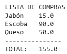

|
Actividad: Diccionarios y tuplas
.

Objetivos:
- Aplicar el concepto de
diccionarios y tuplas en la solución de problemas.
- Aplicar los conocimientos
sobre funciones.

Modalidad:

Ejercicios:
Diccionarios
.
- Diseña la
función lista_compras
()
que cree un diccionario que simule una lista de compras. La función
deberá preguntar el artículo y su precio y añadir el par de datos
al diccionario, hasta que el usuario decida terminar.
Cada
vez que se añadan datos, debe imprimirse el contenido del
diccionario. La función deberá regresar el diccionario con los datos de los
artículos comprados. En el main se debe imprimir el
diccionario final.
Caso de prueba:
-
Input: Nombre del artículo.
-
Input: Precio del artículo.
-
Output: Se imprime el contenido del diccionario.
-
Input: Se pregunta si desea agregar otro artículo
(Si / No). Se solicita el nombre del artículo y su precio hasta que el usuario
introduce No.

- Diseña la
función
imprime_compras
(diccionario) que recibe el diccionario creado en
la función lista_compras() y muestra en pantalla la lista de las
compras y el costo total, con el siguiente formato:
| Lista de
compras |
|
| Artículo 1 |
Precio |
| Artículo 2 |
Precio |
| Artículo 3 |
Precio |
| … |
… |
| TOTAL: |
Costo total
|
Ejemplo:

Ejercicios:
Tuplas
-
Diseñe la función promedio
que reciba una tupla como parámetro de entrada y con un ciclo for
regrese el valor promedio de los elementos
almacenados en la tupla.
NOTA: Utiliza el ciclo for y un
acumulador.
- Diseñe la función main:
- Almacene una tupla con los valores: 1, 2, 2, 2, 3, 3, 3, 4
y llámela t.
- Imprima el tamaño de la tupla con la función len.
- Usando la función count, imprima el conteo
de elementos igual a 2 y de elementos igual a 3.
- Llama a la función
promedio con la tupla creada t
e imprime el resultado de la función.

Especificaciones
de entrega:
- Formato de
entrega:
pdf
- Nombre del
entregable:
A10_matrícula.pdf
(Impresión de pantalla de
cada función y su ejecución)
- Medio de
entrega: Se entrega en Canvas en la sección de
Actividad: Diccionarios y tuplas
|